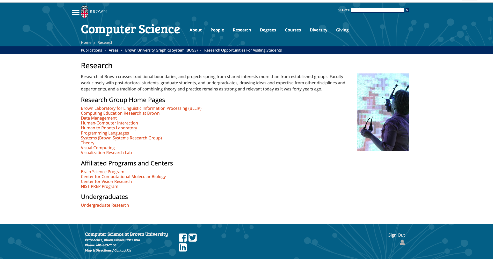
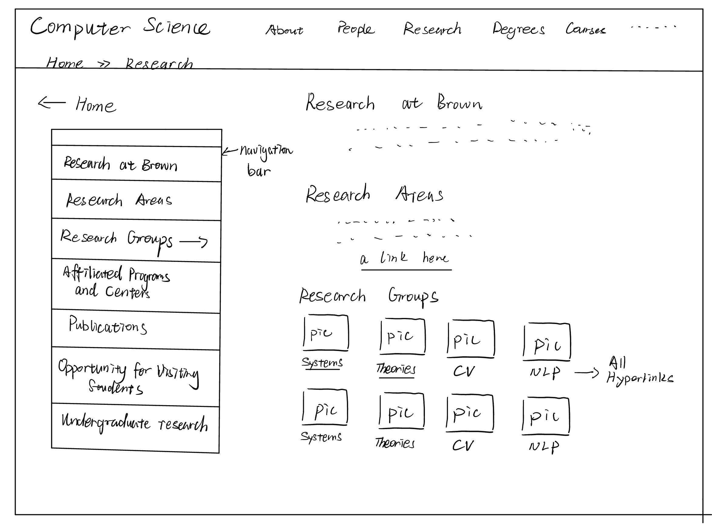
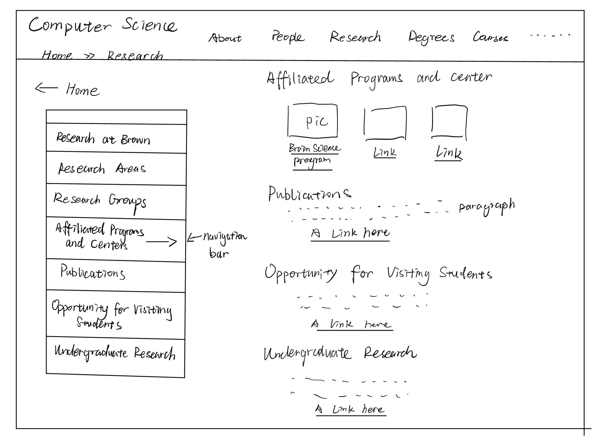
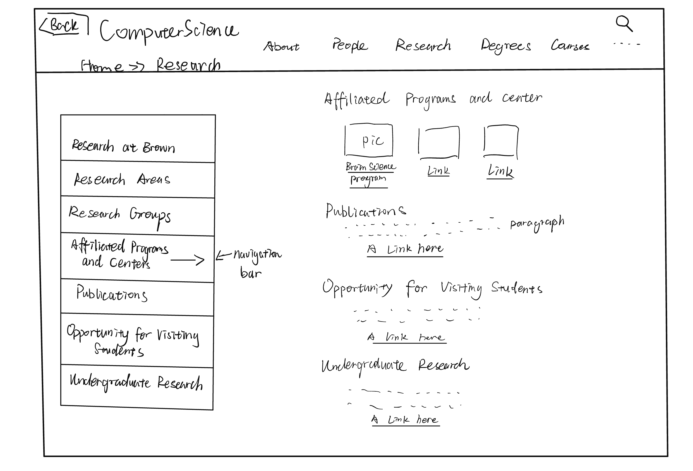
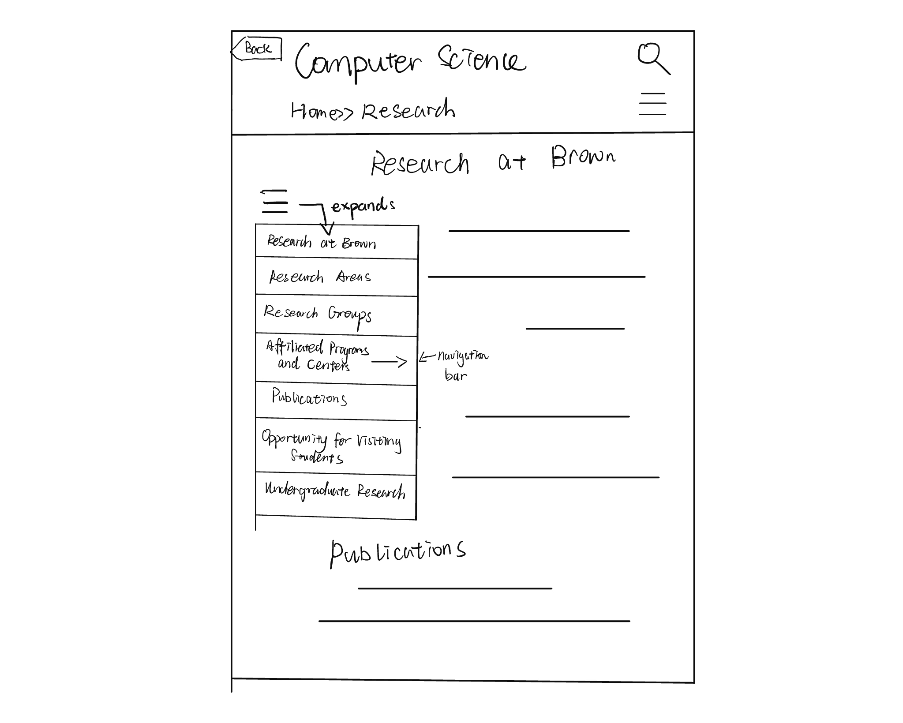
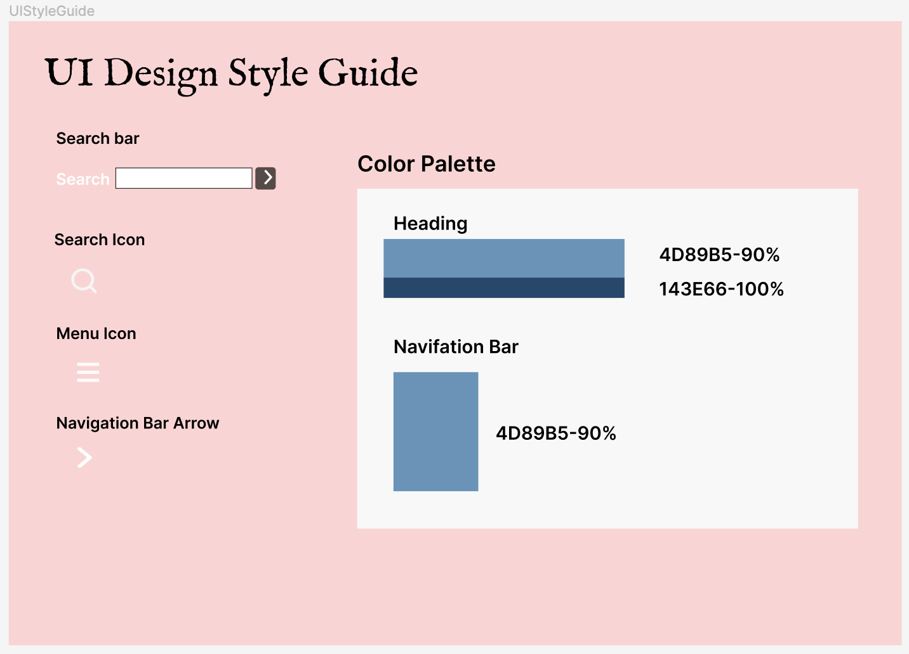
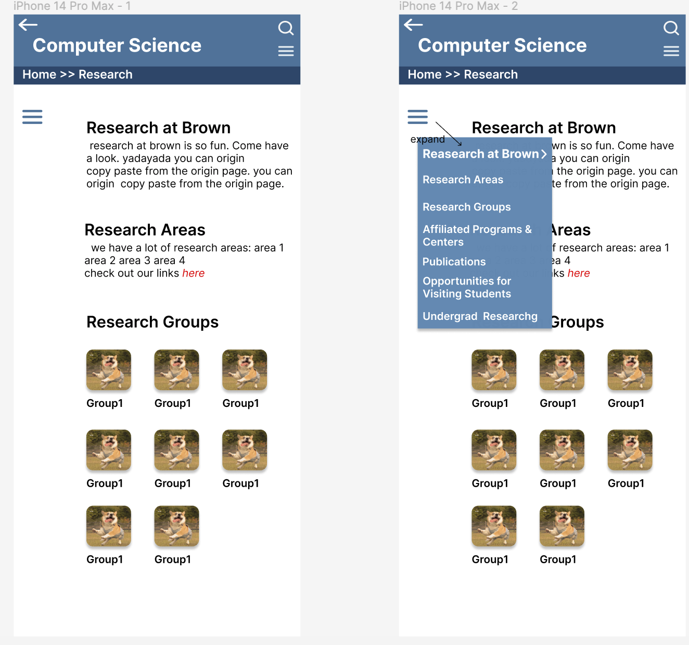
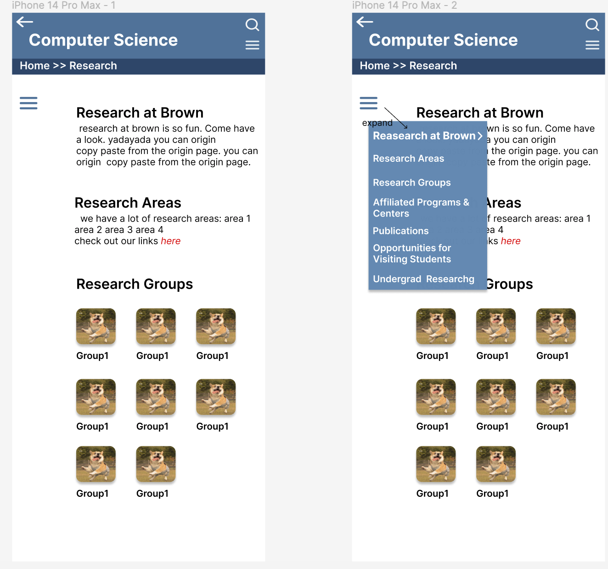

In this project we a redesign poorly designed website
Part 1: Identifying Usability Problems
Brown CS Department Research Page
Link to this website. Problems
- Visibility of system status: the font color of the current internal path is vague.
- User control and freedom: clicking a link to any research lab will redirect to its home page, but not open in a new tab, makes it hard to go back to the last page, lead to user anxiety due to the lack of control.
- Recognition rather than recall: If you click the link of Undergraduate Research, you will get to a page located at "Home » Degrees » Undergrad » Research", which can be very confusing because it has a different path from "Home » Research".
- Help and documentation: The relationship of the two parallel banners of menus is confusing. The relationship of the banners and body content is also unclear.
- Visibility of system status: The font color of the current internal path is vague.
Accessibility
There are 1 errors detected: 1 missing form lable. There are 15 contrast errors: all have very low contrast. There are 13 alerts: 7 of them are redundant links, and 4 of them are redundant title text.
Part 2: Visual Redesign
Low-fidelity Wireframing




Visual Design Style Guide

Now the website is responsive in three modes, and the navgiation bar makes more sense.
High-Fidelity Prototyping


 

Part 3: Responsive Redesign
Implementaion
Implementation with HTML, CSS, JavaScript, Bootstrap
Link to my redesigned webisteFeel free to scroll and click on the bars and buttons!